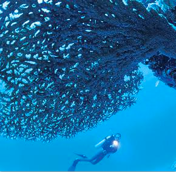

Health Communication
Evidence-based health psychology paired with effective communication techniques to make sure your healthcare campaign works - by getting the right message across the right way.
The key: expert knowledge of human health behavior and plenty of real-life experience.
Strategic Consulting
Launching a healthcare campaign in Germany? Local knowledge and hands-on experience are key.
Let me help you navigate the German healthcare system and mentality to make your project a success.

Psychological Research
Effective health campaigns are based on profound insights into the root causes of patient and client behavior.
The key is to go beyond pigeon-holing people into personas and market segments. Psychological research digs deeper and find the spots you need to hit to really make a difference